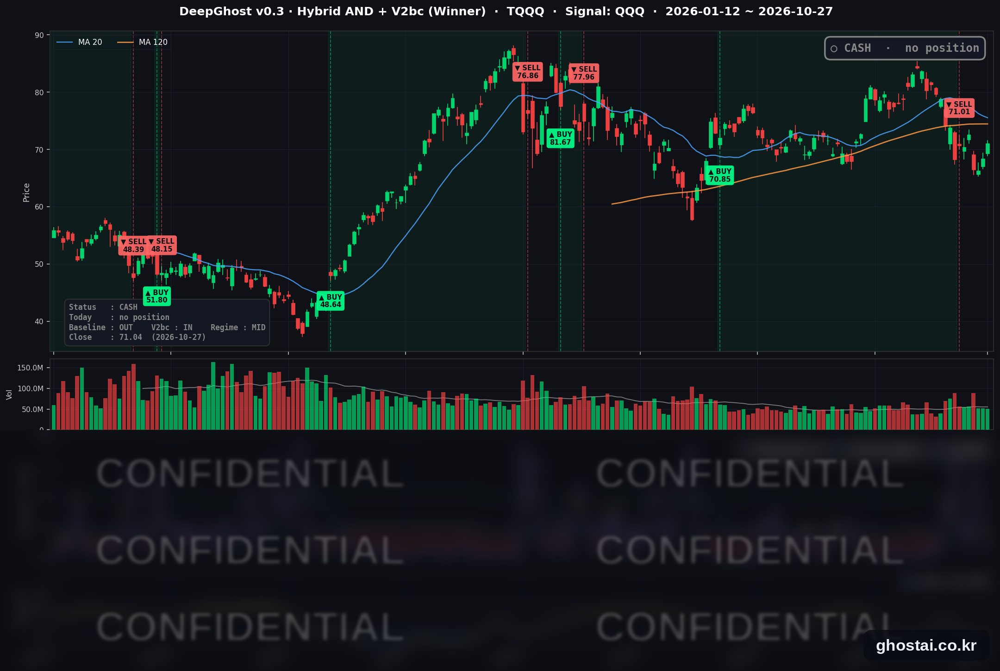

반도체주 이틀째 강세, 오른 종목은 50% 이하
· Ghost.AI 데일리 리포트
👻 매일 시그널과 히스토리를 홈페이지에서 한눈에 → www.ghostai.co.kr
회원 페이지 안내 — 회원 가입하시면 커버리지 전 종목의 원본 시그널과 분석 레포트를 매일 확인하실 수 있습니다. 회원 페이지는 블로그·유튜브보다 먼저 업데이트됩니다. 지금 베타 회원을 받고 있으며, 이메일과 필명만으로 가입하실 수 있고 서비스 사용료는 받지 않습니다. 이메일 확인 후 바로 이용하실 수 있습니다.
한 줄 요약: 반도체·AI 하드웨어주가 이틀째 크게 올라 나스닥 종합은 1.18% 올랐지만, S&P 500 구성종목 중 오른 종목은 절반이 안 됐습니다. FOMC 결정을 하루 앞두고 10년물 국채 금리는 4.993% 로 거의 움직이지 않았습니다. 다시 상승추세 초입에 있으며 모델이 이 추세가 안정되었다고 판단하면 매수 시그널을 다시 낼 것 같습니다.
📊 오늘의 매매 신호
| 항목 | 내용 |
|---|---|
| 오늘의 신호 | 🟡 신규 신호 없음 — 전략은 현금 보유를 유지합니다 |
| 포지션 상태 | 💵 현금 보유 중 (OUT OF POSITION) |
| 현금 보유 기간 | 2026-10-19 ~ 2026-10-27 (7거래일) |
| TQQQ 종가 | $71.04(+3.81%) |
TQQQ 시그널 — OUT OF POSITION
현재 상태: 현금 보유 중 | 신규 신호 없음

전략은 10월 16일(금)에 나온 매도 신호에 따라 19일(월) 미국 장 시가 71.01달러에 TQQQ 를 매도했고, 오늘까지 7거래일째 현금 보유 중입니다. 8월 6일 시가 70.85달러에 매수한 이번 거래의 전략 수익률은 +0.23% 입니다.
| 날짜 | TQQQ 종가 | 매도가(71.01달러) 대비 |
|---|---|---|
| 10/19(월) | $70.64 | -0.52% |
| 10/20(화) | $70.41 | -0.84% |
| 10/21(수) | $72.61 | +2.25% |
| 10/22(목) | $66.42 | -6.46% |
| 10/23(금) | $66.29 | -6.65% |
| 10/26(월) | $68.43 | -3.63% |
| 10/27(화) | $71.04 | +0.04% |
오늘 QQQ 가 1.27% 오르면서 TQQQ 는 3.81% 올라 71.04달러로 마감했습니다. 매도가와 거의 같은 수준(0.04% 위)이고, 6월 2일 최고 종가(87.22달러)보다는 18.55% 낮습니다.
오늘 미국 시장 — 시황 요약
지수 마감
| 지수 | 종가 | 등락률 |
|---|---|---|
| S&P 500 | 7,722.60 | +0.60% |
| 나스닥 종합 | 26,477.81 | +1.18% |
| 다우존스 | 52,377.57 | +0.03% |
| 러셀 2000 (IWM) | 280.18 | +1.15% |
| QQQ (나스닥100) | 721.25 | +1.27% |
| TQQQ | 71.04 | +3.81% |
| 반도체 ETF (SOXX) | 511.06 | +3.91% |
지수는 소폭 높게 출발해 장중에 상승 폭을 키웠습니다. QQQ 는 SPY(+0.56%)보다 두 배 넘게 올랐고, 다우는 보잉 급락으로 보합에 그쳤습니다. 사상 최고 종가를 낸 지수는 없으며, 나스닥은 10월 6일 최고 종가보다 4.07% 낮습니다.
국채 금리 동향
| 만기 | 10/26 종가 | 10/27 종가 | 전일 대비 |
|---|---|---|---|
| 3개월 | 4.025% | 4.040% | +1.5bp |
| 5년 | 4.824% | 4.840% | +1.6bp |
| 10년 | 4.986% | 4.993% | +0.7bp |
| 30년 | 5.301% | 5.305% | +0.4bp |
만기별 금리 변화는 모두 2bp 이내였고, FOMC 결정을 앞두고 단기·중기물이 장기물보다 조금 더 올랐습니다. 10년물은 나흘 연속 5% 아래에서 마감했습니다. 10년물과 3개월물의 차이는 95.3bp 로 역전은 없습니다. 소비자신뢰지수가 크게 올랐지만 장기물 반응은 1bp 미만이었고, 오늘 주가 방향을 정한 재료는 금리가 아니었습니다.
연준 발언 & 금리 패스
- 발언 없음 — 10월 17일(토)부터 29일(목)까지 FOMC 전후 발언 금지 기간이며, 27일 이틀 일정의 FOMC 회의가 시작됐습니다.
- 금리 결정은 28일(수) 오후 2시(미 동부)에 나오고, 이어서 케빈 워시 의장의 기자회견이 있습니다. 이번 회의에는 경제전망(SEP) 발표가 없고, 다음 경제전망은 12월 8~9일 회의에서 나옵니다.
- 정책금리는 9월 16일 0.25%p 인상 뒤 3.75~4.00% 입니다. 이번 회의는 동결 전망이 우세해, 관심은 12월 추가 인상에 대한 언급입니다.
오늘의 핵심 이슈
- 반도체·AI 하드웨어주가 이틀째 크게 올랐습니다. SOXX 는 3.91% 올라 이틀 동안 6.87% 올랐고, 10월 22일 하루 하락(-6.79%) 전 수준을 넘었습니다. S&P 500 의 반도체 14종목이 모두 올랐고, 델(+7.47%)·슈퍼마이크로(+7.34%)·웨스턴디지털(+6.95%) 등 서버·저장장치 업체도 강했습니다. 데이터센터 장비 업체 셀레스티카는 3분기 매출이 1년 전보다 83% 늘었다고 발표하고 내년 매출 전망 400억 달러를 처음 내놓았습니다.
- 지수는 올랐지만 S&P 500 구성종목의 절반 이상은 내렸습니다. 494종목 중 오른 종목은 239개였고 등락률 중간값은 -0.06% 였습니다. 보잉은 3분기 핵심 주당순손실 0.34달러를 발표한 뒤 10.69% 내렸고, 발레로(-9.24%) 등 정유주도 크게 내렸습니다. 필수소비재는 32종목 중 3종목만 올라 업종 중 가장 약했습니다. UPS 는 연간 전망을 올린 뒤 5.75% 올랐습니다.
- 소비자신뢰지수가 크게 올랐습니다. 콘퍼런스보드 10월 소비자신뢰지수는 91.7 로 9월(수정치 84.2)보다 7.5포인트 올랐고, 현재 상황 지수(120.4)와 기대 지수(72.6)가 모두 올랐습니다.
변동성 & 투자심리
VIX 는 18.39 에서 17.52 로 4.73% 내려 10월 21일 이후 가장 낮은 종가를 기록했습니다. CNN 공포탐욕지수는 10월 27일 값을 확인하지 못했고, 마지막으로 확인한 값은 10월 23일 기준 21(극단적 공포) 입니다. 지수와 VIX 는 이틀 연속 나아졌지만, 상승이 AI 하드웨어주에 몰려 나머지 종목의 중간값은 소폭 하락이었습니다.
매크로 & 원자재
| 품목 | 종가 | 등락률 |
|---|---|---|
| 원유 ETF (USO) | $163.88 | -1.41% |
| 금 ETF (GLD) | $372.28 | +1.21% |
- 유가: USO 는 10월 23일 올해 최고 종가(169.53달러)에서 이틀 동안 3.33% 내렸습니다.
- 금: GLD 는 이틀 연속 올랐습니다.
주요 종목 동향
| 종목 | 종가 | 등락률 | 비고 |
|---|---|---|---|
| TSLA | 407.46 | +4.04% | 이틀 연속 4% 넘게 상승 |
| AVGO | 342.33 | +4.00% | |
| INTC | 93.74 | +3.61% | 10/29 장 마감 후 실적 |
| MU | 928.76 | +2.77% | |
| QCOM | 184.17 | +2.54% | |
| AMZN | 253.10 | +1.61% | 10/29 장 마감 후 실적 |
| GOOGL | 320.58 | +1.19% | 10/28 장 마감 후 실적 |
| AAPL | 347.10 | +0.93% | |
| NVDA | 217.94 | +0.90% | |
| MSFT | 531.33 | -0.24% | 10/28 장 마감 후 실적 |
| META | 620.19 | -1.64% | 10/21 실적 발표 뒤 4거래일 -11.09% |
| NFLX | 62.52 | -2.16% |
커버리지 12종목 중 9종목이 올랐습니다. 반도체 5종목(AVGO·INTC·MU·QCOM·NVDA)이 모두 올랐지만, 엔비디아는 +0.90% 로 S&P 500 반도체 14종목 중 가장 적게 올랐습니다.
다음 일정 (미 동부시간)
- 10/28(수) 14:00 FOMC 금리 결정, 이어서 워시 의장 기자회견 / 장 마감 후 마이크로소프트·알파벳 실적
- 10/29(목) 08:30 3분기 GDP 속보치, 9월 개인소득·지출(PCE 물가) / 장 마감 후 아마존·인텔 실적
Ghost.AI — Quantitative AI Investment
Model: DeepGhost v0.3 | Transformer-Based Deep Learning
Coverage: 14 tickers | Updated every trading day after US market close
⚠️ 본 자료는 정보 제공 목적으로만 작성되었으며 투자 권유가 아닙니다. 모든 투자의 책임은 투자자 본인에게 있습니다. 과거 성과가 미래 수익을 보장하지 않습니다.
[유의사항]
- 본 서비스는 불특정 다수를 대상으로 발행되는 단방향 정보 제공 서비스이며, 투자자 개인의 재산 상황·투자 목적·위험 선호도를 반영한 개별 투자 조언이 아닙니다.
- 고스트에이아이 주식회사는 고객과 쌍방향 의사소통(개별 상담, 맞춤형 자문 등)을 제공하지 않습니다.
- 본 콘텐츠는 투자 권유 또는 매매 주문의 청약·청약의 권유에 해당하지 않으며, 최종 투자 판단 및 그에 따른 손익의 책임은 전적으로 투자자 본인에게 있습니다.
고스트에이아이 주식회사